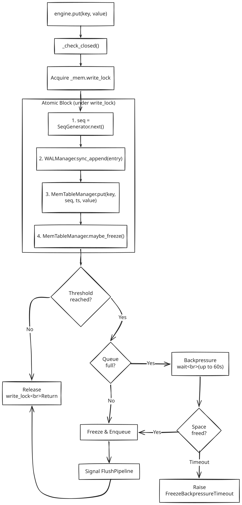
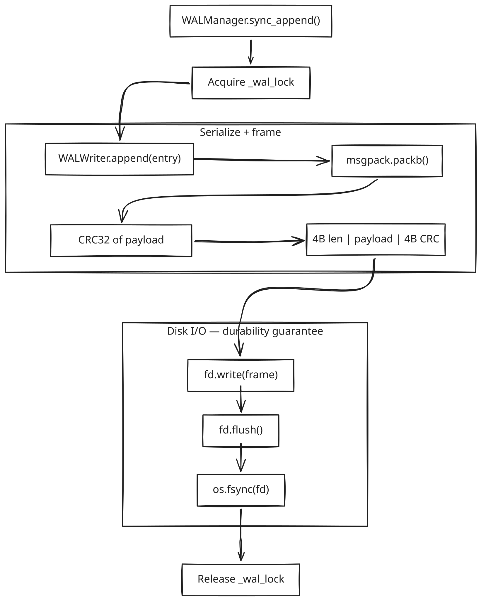
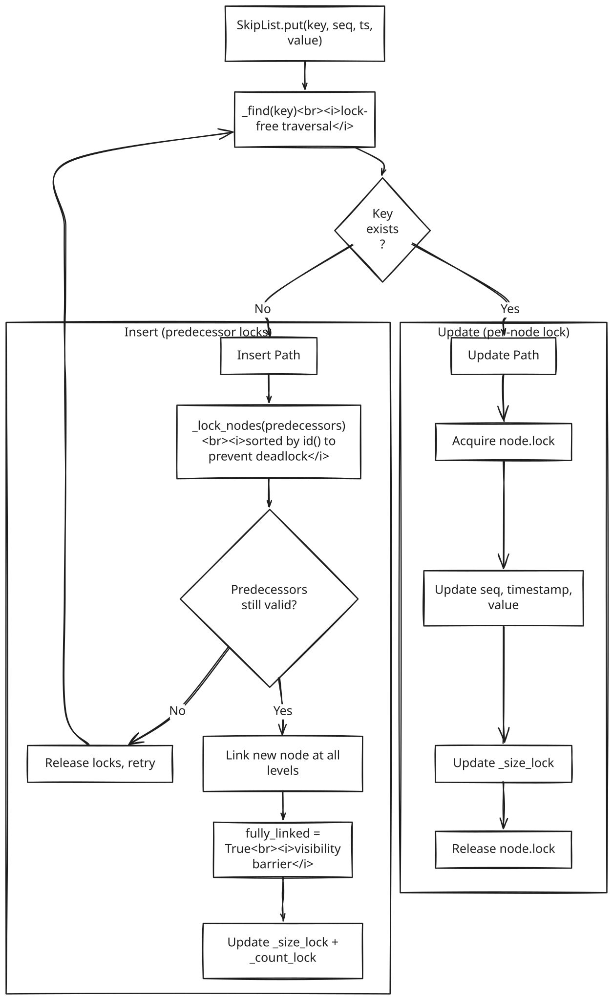
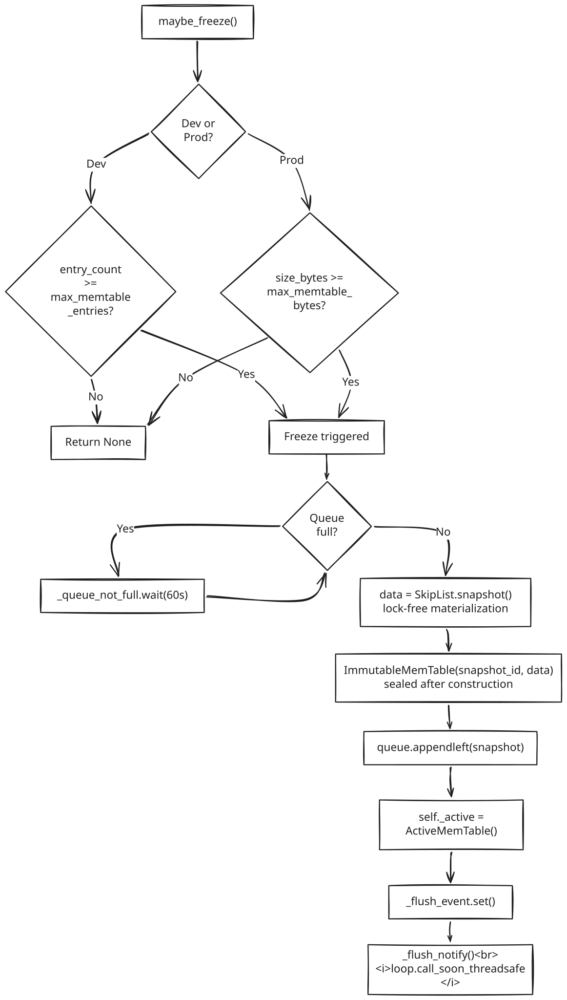
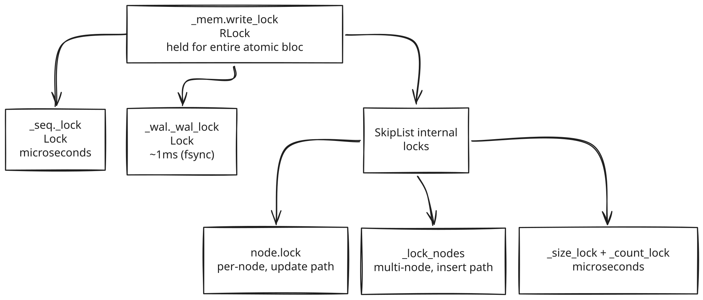
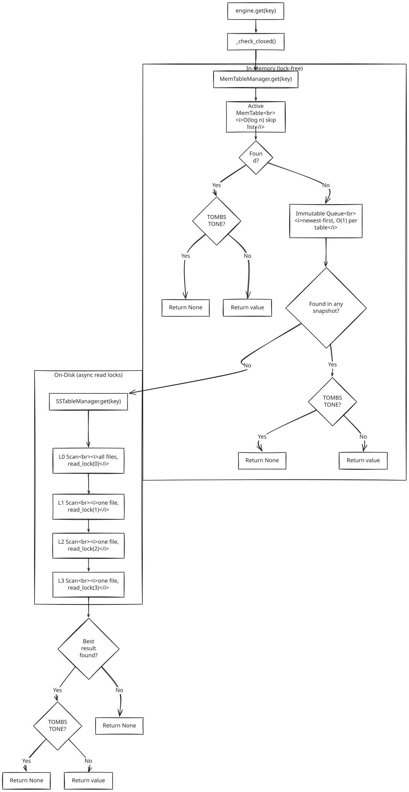
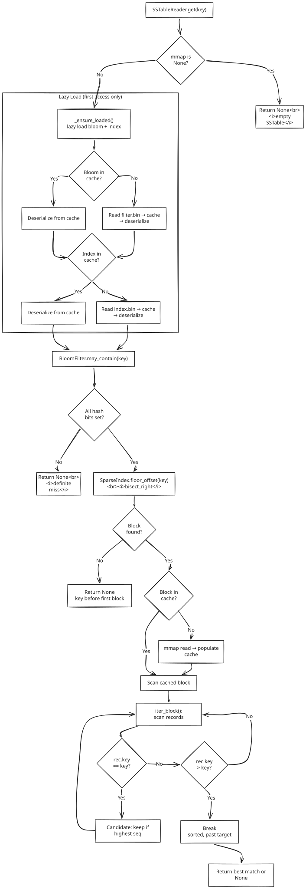
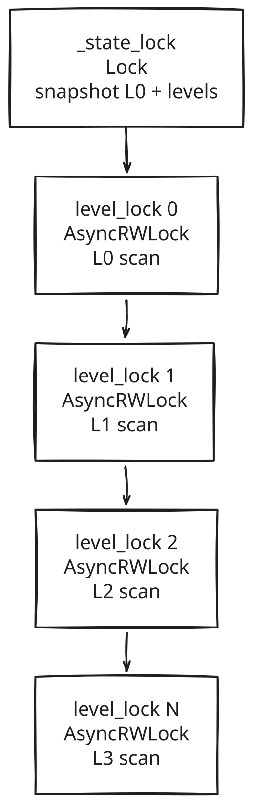
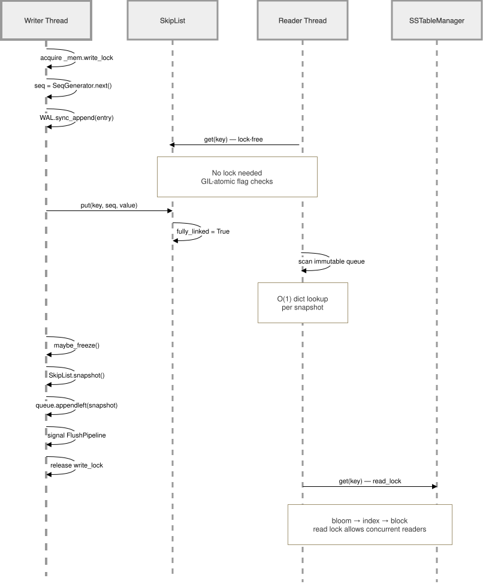

Read & Write Flow¶
This document traces the exact path of data through the lsm-kv engine for both write and read operations. Every lock acquisition, every conditional branch, and every data transformation is documented.
Write Flow¶
Overview¶
All writes (put, delete) follow the same atomic path under a single lock. The key invariant is durability before visibility — the WAL is fsynced before the memtable is updated.

Step 1: Sequence Generation¶
SeqGenerator.next() atomically increments and returns a monotonically increasing integer under its own threading.Lock. This seq number is the MVCC version — higher seq means newer data.
Step 2: WAL Durability¶

Lock ordering constraint: _mem.write_lock is always acquired before _wal_lock. Reversing this order would cause deadlock, since the write path holds write_lock while calling sync_append() which acquires _wal_lock internally.
Step 3: MemTable Insert¶
The write delegates through MemTableManager → ActiveMemTable → SkipList:

Step 4: Conditional Freeze¶
maybe_freeze() checks whether the active memtable has crossed its threshold:
| Mode | Condition | Default |
|---|---|---|
| Dev | entry_count >= max_memtable_entries |
10 entries |
| Prod | size_bytes >= max_memtable_bytes |
64 MB |

Delete vs Put¶
delete(key) follows the identical path but writes OpType.DELETE and value=TOMBSTONE (sentinel b"\x00__tomb__\x00"). The tombstone propagates through flush and compaction. Readers check for tombstones and return None.
Manual Flush¶
engine.flush() calls force_freeze(), which bypasses the threshold check and freezes unconditionally (unless the memtable is empty). The same backpressure and signaling logic applies.
Write Path Lock Hierarchy¶

Write Path Error Conditions¶
| Error | Condition | Recovery |
|---|---|---|
EngineClosed |
Engine has been closed | Caller must reopen |
OSError |
WAL fsync failure | Write fails atomically (memtable not updated) |
SkipListKeyError |
Empty key | Caller error |
SkipListInsertError |
64 concurrent retries exhausted | Extremely rare contention |
SnapshotEmptyError |
Freeze called on empty table | Should never happen (threshold > 0) |
FreezeBackpressureTimeout |
Queue full for 60 seconds | Flush pipeline may be stuck |
Read Flow¶
Overview¶
Reads scan from newest to oldest data sources. The first match with the highest sequence number wins. No write locks are acquired — reads are non-blocking.

Step 1: Active MemTable Lookup¶
SkipList.get(key) performs a lock-free top-down traversal starting from the highest occupied level. At level 0, it checks whether the successor node matches the key and is visible (fully_linked=True, marked=False). These boolean reads are atomic under CPython's GIL.
Returns (seq, value) or None. Does not return timestamp_ms — only seq is needed for MVCC ordering.
Step 2: Immutable Queue Scan¶
The queue is scanned newest-first (deque index 0 is newest). Each ImmutableMemTable.get(key) is an O(1) dict lookup — the internal _index dict maps keys directly to their position in the sorted data list.
Concurrent safety: A list() copy of the deque is taken before iteration to prevent concurrent modification if pop_oldest() runs during the scan. The copy is O(n) but n <= 4 (queue max).
Step 3: L0 SSTable Scan¶
All L0 files must be checked because their key ranges overlap. The scan holds a read lock on level 0 (via AsyncRWLock) to prevent compaction from swapping files mid-scan.
For each file, SSTableReader.get(key) executes this pipeline:

Bloom Filter Check¶
BloomFilter.may_contain(key) hashes the key with multiple mmh3 seeds and checks the bit array. If any bit is unset, the key is definitely absent — skip this SSTable. False negatives are impossible; false positives are controlled by bloom_fpr config (5% dev, 1% prod).
Sparse Index Bisect¶
SparseIndex.floor_offset(key) uses bisect_right to find the block whose first key is <= the search key. Returns the byte offset into data.bin where the candidate block starts, or None if the key is before the first block.
Block Cache + mmap Scan¶
The identified block is checked in the block cache first. On a cache miss, the block is read via mmap (zero-copy memoryview) and populated into the cache. Records within the block are scanned sequentially via iter_block(). Since records are sorted by key, the scan stops early when rec.key > key.
MVCC: Highest Seq Wins¶
Across all L0 files, the result with the highest seq is kept. This ensures the most recent write wins even when the same key appears in multiple L0 SSTables.
Step 4: L1+ SSTable Scan¶
Each level above L0 has at most one SSTable. The scan proceeds sequentially from L1 upward, with a read lock per level. The same SSTableReader.get() flow (bloom → index → block) applies.
Step 5: Tombstone Resolution¶
After finding a result from any source, the engine checks if the value is the TOMBSTONE sentinel. If so, the key has been deleted — return None.
Read Path Lock Summary¶

No write locks are ever acquired during reads. The memtable scan is entirely lock-free. The AsyncRWLock read locks allow multiple concurrent readers while blocking compaction commits.
Read Path Data Types¶
| Source | Returns | Type |
|---|---|---|
| SkipList.get() | (seq, value) |
tuple[int, bytes] \| None |
| ImmutableMemTable.get() | (seq, value) |
tuple[int, bytes] \| None |
| SSTableReader.get() | (seq, timestamp_ms, value) |
tuple[int, int, bytes] \| None |
| LSMEngine.get() | value |
bytes \| None |
Interaction Between Read and Write¶
Reads and writes can happen concurrently without blocking each other:

Key concurrency properties:
- Writers hold
_mem.write_lock— serializes writes but does not block readers - Readers are lock-free in memtable — skip list traversal checks GIL-atomic flags
- Readers hold AsyncRWLock read locks — multiple readers proceed simultaneously
- Compaction holds write locks — blocks new readers only during the brief commit phase (< 5ms)
- Flush pipeline is async — runs on the event loop, does not hold write locks